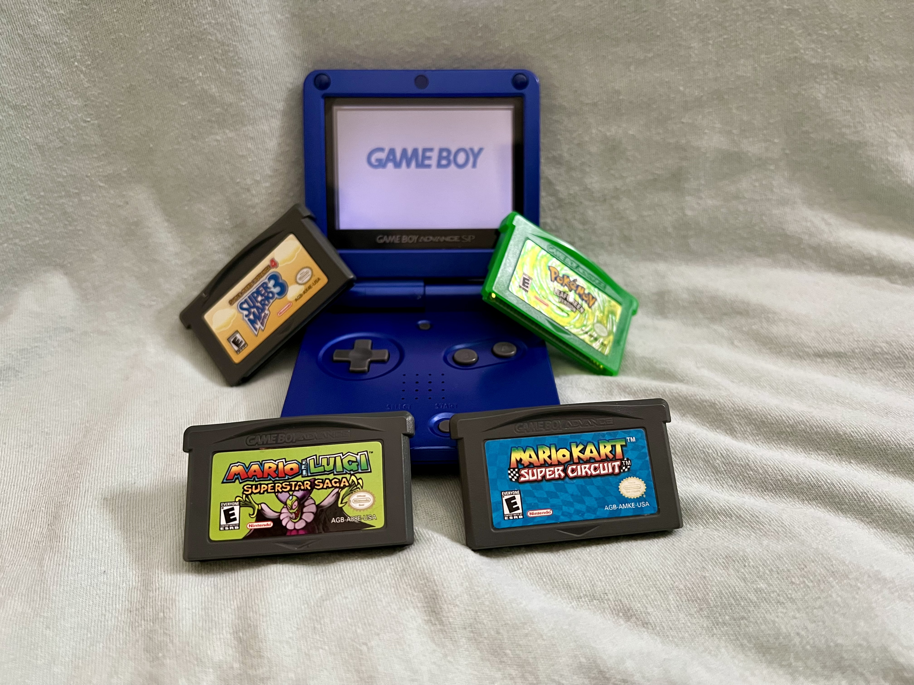
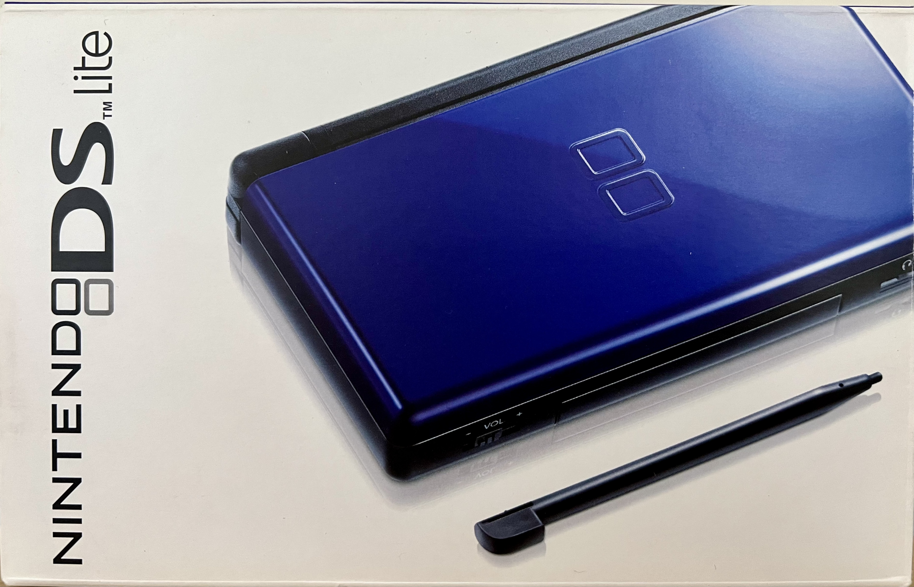
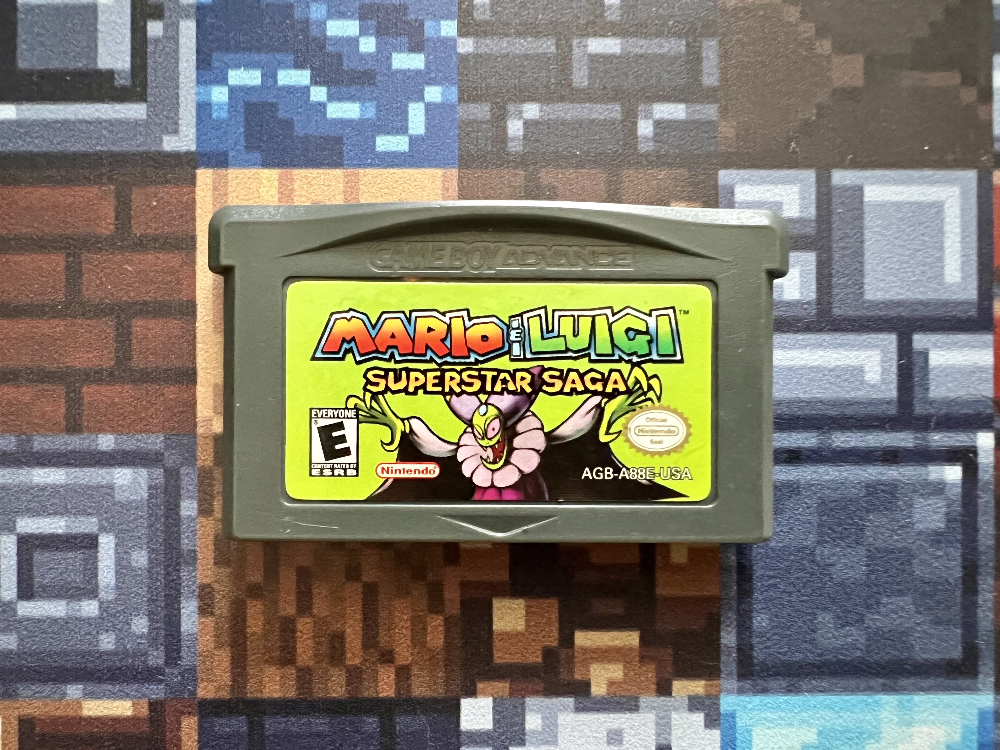
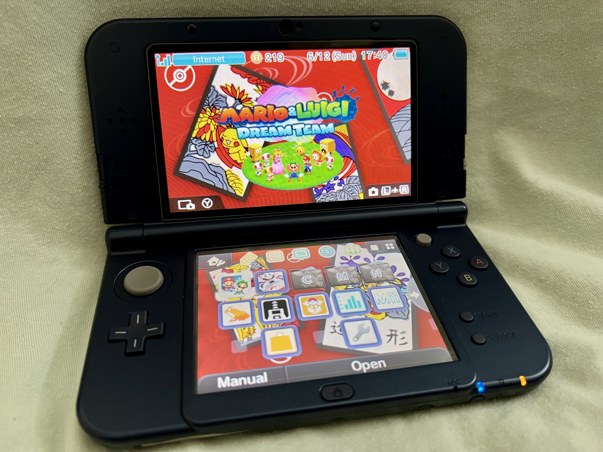

The Meet Cute: The Gameboy Advance SP
When I was a kid, I reveled in my time spent outdoors. I rode my bike almost every day after school,
often stopping at the local CVS to pick up a caloric chocolate treat. My best friend and cousin, Dave,
would usually accompany me. One humid summer day, after returning to Dave's home from one of our quotidian trips,
he showed me his Gameboy Color. I swooned. I had played video games before, but I didn't realize it was possible
to take video games with me.
I pleaded with my parents to buy me one of these novel Gameboy contraptions.
They worried I would rot my brain and be less interested in my outdoor adventures, but I assured them I could strike
a balance. That Christmas, my patience and persistence were rewarded; I opened the most consequential gift I've ever
received: My Blue Gameboy Advance SP (pictured above). I was awful at the games. To say my skill was lacking
would be a grand understatement. But I loved that Gameboy. I played Pitfall in the park, Pac-Man in the parking garage,
and Mario & Luigi: Superstar Saga in bed until the wee hours of the morning. My life would never be the same!

Love Blooms: The Nintendo DS Lite
Just as my life changed, so too did the video game market. I loved my Gameboy Advance SP, but bigger and better
things were on the horizon: The Nintendo DS. I had failed to keep my promise to my parents: whenever I had spare time, I spent it
staring at my beloved handheld. So, when I asked for a Nintendo DS, they said no, but used the opportunity to teach me a lesson.
They said I could get a Nintendo DS, but only if I paid for it myself, in full. Now, as a 12-year-old, the most money
I'd ever had was about $60, and I'd spent it all on candy. So it goes. However, I was ready to meet this challenge. How could
I resist the temptation of the DS? Two screens, wireless connectivity, bigger and better games! I was on a mission. After many lemonade
stands in the summer, hot chocolate stands in the winter, and couch cushion searches for spare change, I finally had what I needed:
$140.00, plus 6% tax, mostly in five and one-dollar bills, plus about 45 quarters. Dave had been tearing through DS games, often as I watched
during our sleepovers, and I had to catch up!
I hopped on my bike, and booked it to the local GameStop with my hoard of cash. The kind
employees helped me sort through my change, and we finalized the purchase. I had just bought my favorite handheld console of all time: My
Cobalt Blue Nintendo DS. I traded in a few of my old Gameboy advance games, and was able to pick up a few DS titles with my store credit.
It was love at first sight: the home screen UI with a calendar! a clock! PICTOCHAT! Download play! I spent years playing that little console,
and while I eventually, and regrettably, later traded it back in, I bought one years later to relive my glory days of gaming (see photo above).
I still remember the times I spent with Dave and our other cousins battling our Pokemon (I always lost), but I'm especially nostalgic for the times I spent alone,
on schoolnights, playing "just a few more minutes" of a game that had captured my imagination.

Our First Fight: Leaving Nintendo for Microsoft
As I said above, I made a huge mistake trading in my Nintendo DS. As I got older, my friends at school had "grown out of" Nintendo games. Such folly.
Regardless, in an effort to fit in, I acted accordingly. I received an Xbox 360 for my birthday early in high school, and to get in on the high-stakes,
high-fidelity action I'd heard so much about at school, I traded in my Nintendo DS plus EVERY game I owned for the system and bought a few Xbox games.
You know the types: Madden 12, Call of Duty, Fifa. I enjoyed my time playing those titles, and it was certainly fun to explore online co-op gaming with
friends from school, but deep down, it wasn't the same. Jumping into a haybale in Assassin's Creed II for the 50th time just wasn't the same as encountering
a Bidoof in Pokemon Pearl for the 50th time. The joy just wasn't there, but the damage was done.
In lieu of a photo of my Xbox 360, I've included a photo of
one of my favorite Gameboy Advance SP games: Mario and Luigi: Superstar Saga. Luckily, I had the wherewithall to hold onto the handheld Nintendo system
that nurtured my love of video games in the first place.

Renewed Vows: Nintendo 3DS and Nintendo Switch
Later in life, during college, I had a nostalgic awakening. I'd had enough of the Xbox and Playstation games. I would still play them with
roommates occasionally, but when it came to my solo gaming time, I wanted to see if I could rekindle what made me love games in the first place:
being immersed in a fantastical world that challenged my skills and forced me to suspend disbelief and use my imagination. With the funds I'd accumulated
bartending and working at my summer camp, I purchased a New Nintendo 3DS XL with a few games, including the latest Pokemon release. Let me tell you, it did not
take long before I felt like a kid again. I was immediately reminded of the great times I'd had playing my first few Nintendo handhelds. I was on another Pokemon
adventure, with improved graphics and an even wider world to explore. I was having imaginative and immersive fun playing a video game again,
and I couldn't have been happier.
After a few years of ripping through game after game on my 3DS, I discovered the Nintendo Switch. It was the perfect
system for me. I could play all of the multi-platform co-op releases with my friends who had other systems, but, more importantly, I could enjoy the latest
releases at home and on the go from the company that fostered my love for gaming as a kid. I still play my Nintendo Switch often; it's probably the system I've
poured the most cumulative hours into over the course of my lifetime. While I will always appreciate a good game, regardless of the system, nothing will ever
outdo that Nintendo charm, gameplay polish, and ability to stimulate one's imagination. Thanks, Nintendo. Without you, I probably would have never gotten so interested
in computers, let alone coding!